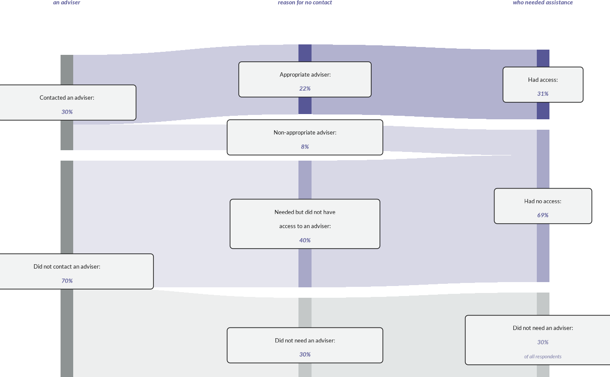

![[Experimental]](figures/lifecycle-experimental.svg)
wjp_sankey() draws a three-column flow diagram (a sankey) such as the
justice pathways of WJP country reports: a first column of nodes (e.g.,
contacted an adviser or not), a second column of nodes that each come from
one first-column node (their parent), and a third column of outcome nodes
that each second-column node flows into (its outcome). Every node carries
a boxed label with its printed value.
Usage
wjp_sankey(
data,
column,
node,
target,
value_labels = NULL,
parent,
outcome,
labels = NULL,
headers = NULL,
notes = NULL,
colors = NULL,
alpha = c(0.3, 0.45),
bar_width = 11,
gap = 9,
width = 604.8,
flow_height = 300,
flow_top = 62,
flow_bottom = 10,
side_margin = 92,
node_color = "#8E9393",
header_size = 10.8,
header_fontface = "bold.italic",
header_colour = "#575796",
header_lineheight = 1.25,
header_baseline = 14,
label_size = 10,
label_colour = "#1A1A1A",
value_fontface = "semibold.italic",
value_colors = "#575796",
note_size = 8.75,
note_colour = "#7D7DA8",
box_fill = "#F2F3F3",
box_border = "#1A1A1A",
box_border_width = 0.6,
box_radius = 2.5,
box_padding = c(3, 7),
line_height = 1.22,
ptheme = WJP_theme()
)Arguments
- data
Data frame with one row per node.
- column
String. Column name with the column of each node (1, 2, or 3).
- node
String. Column name with the key of each node (unique within its column).
- target
String. Column name with the value of each node.
- value_labels
String. Column name with the printed value of each node. Default is
NULL(no values).- parent
String. Column name with the first-column node of each second-column node.
- outcome
String. Column name with the third-column node of each second-column node.
- labels
String. Column name with the box label of each node. Default is
NULL(the node keys).- headers
Character vector of length 3 with the column titles (use
"\n"for line breaks). Default isNULL(no titles).- notes
String. Column name with an optional note printed below the value of a node. Default is
NULL.- colors
Named vector of colors, one per third-column node. Default is
NULL(the WJP palette).- alpha
Numeric vector of length 2 with the opacity of the flows into the second and the third column. Default is
c(0.30, 0.45).- bar_width
Numeric. Width of the node bars, in points. Default is
11.- gap
Numeric. Vertical gap between the nodes of a column, in points. Default is
9.- width
Numeric. Width of the chart, in points. Default is
604.8(8.4 inches).- flow_height
Numeric. Height of the flow area, in points. Default is
300.- flow_top
Numeric. Space above the flow area for the column titles, in points. Default is
62.- flow_bottom
Numeric. Space below the flow area, in points. Default is
10.- side_margin
Numeric. Distance from the left and right edges of the chart to the outer bars, in points. Default is
92.- node_color
String. Color of the first-column bars. Default is
"#8E9393".- header_size
Numeric. Size of the column titles, in points. Default is
10.8.- header_fontface
String. Font face of the column titles. Default is
"bold.italic".- header_colour
String. Color of the column titles. Default is the report color
"#575796".- header_lineheight
Numeric. Line height of the column titles, as a multiple of their size. Default is
1.25.- header_baseline
Numeric. Baseline of the first title line, in points from the top of the chart. Default is
14.- label_size
Numeric. Size of the box labels and values, in points. Default is
10.- label_colour
String. Color of the box labels. Default is
"#1A1A1A".- value_fontface
String. Font face of the values. Default is
"semibold.italic"(bold italic when that weight is not available; seewjp_fonts()).- value_colors
Color of the values: one color, or a vector named by node keys for the nodes whose value has another color. Default is
"#575796".- note_size
Numeric. Size of the notes, in points. Default is
8.75.- note_colour
String. Color of the notes. Default is
"#7D7DA8".- box_fill
String. Fill of the label boxes. Default is
"#F2F3F3".- box_border
String. Border color of the label boxes. Default is
"#1A1A1A".- box_border_width
Numeric. Border width of the boxes, in points. Default is
0.6.- box_radius
Numeric. Corner radius of the boxes, in points. Default is
2.5.- box_padding
Numeric vector of length 2 with the vertical and horizontal padding of the boxes, in points. Default is
c(3, 7).- line_height
Numeric. Line height inside the boxes, as a multiple of
label_size. Default is1.22.- ptheme
ggplot theme to apply. Default is
WJP_theme().
Details
The function expects one row per node with its column (1, 2, or 3), its
key (node), its value (target, e.g. percentages that add up to 100 in
each of the first two columns), and its printed value (value_labels).
Second-column rows also name their parent (a first-column node) and their
outcome (a third-column node). Nodes are stacked from top to bottom in the
order of the data within each column.
Heights: first- and second-column nodes are as tall as their target;
third-column nodes are as tall as the sum of the second-column nodes that
flow into them (their own target is not used for the geometry, so their
printed value can follow another definition). The tallest column fills
flow_height points including the gaps between its nodes.
Colors: flows, second-column bars, and third-column bars take the color of
their outcome (colors, named by the third-column node keys); first-column
bars use node_color. Flows from the first to the second column use
alpha[1] and flows into the third column alpha[2].
Labels: labels gives the text of each box (use "\n" for line breaks);
the printed value goes below it and the optional notes below the value.
Column titles are given by headers. The chart is drawn on a canvas of
width by flow_top + flow_height + flow_bottom points, so wjp_save()
writes it at that exact size.
Examples
# Always load the WJP fonts
wjp_fonts()
# Pathways to accessing an adviser (fictional data)
pathways <- data.frame(
column = c(1, 1, 2, 2, 2, 2, 3, 3, 3),
node = c("contacted", "not_contacted", "appropriate", "non_appropriate",
"needed_no", "no_need", "access", "no_access", "excluded"),
value = c(30, 70, 22, 8, 40, 30, 31, 69, 30),
parent = c(NA, NA, "contacted", "contacted", "not_contacted", "not_contacted",
NA, NA, NA),
outcome = c(NA, NA, "access", "no_access", "no_access", "excluded", NA, NA, NA),
label = c("Contacted an adviser:", "Did not contact an adviser:",
"Appropriate adviser:", "Non-appropriate adviser:",
"Needed but did not have\naccess to an adviser:",
"Did not need an adviser:", "Had access:", "Had no access:",
"Did not need an adviser:"),
note = c(rep(NA, 8), "of all respondents")
)
pathways$text <- paste0(pathways$value, "%")
wjp_sankey(
pathways,
column = "column",
node = "node",
target = "value",
value_labels = "text",
parent = "parent",
outcome = "outcome",
labels = "label",
notes = "note",
headers = c("Contacted\nan adviser", "Type of adviser or\nreason for no contact",
"Access among those\nwho needed assistance"),
colors = c(access = "#575796", no_access = "#A8A8C8", excluded = "#C4C8C8"),
value_colors = c(excluded = "#7D7DA8")
)
